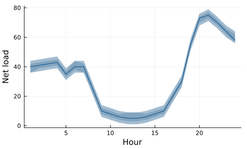
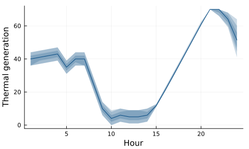
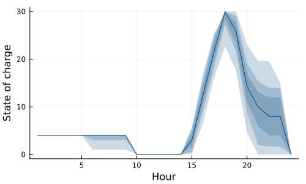
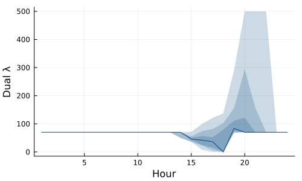
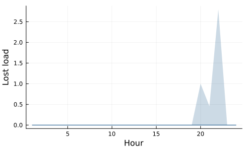

Example: batteries
This tutorial was generated using Literate.jl. Download the source as a .jl file. Download the source as a .ipynb file.
The purpose of this tutorial is to demonstrate how to model the operation of a battery in power system with uncertain load.
This example was originally developed by Andy Philpott as part of the Winter School Kvitfjell 2025, Planning Under Uncertainty in Energy Markets, organized by NORDAB - The Norwegian Doctoral Academy in Business.
Packages
This tutorial requires the following packages:
using SDDPimport HiGHSimport PlotsThe model
Our model is a day in the life of a simple power system with one thermal generator and one battery. There are 24 hourly stages that form a linear policy graph.
There are two state variables: x_soc, the state-of-charge of the battery; and x_thermal, the output of the thermal generator.
There are four control variables: u_charge and u_discharge for charging and discharging the battery in each stage, and u_slack and u_surplus for measuring the slack and surplus energy generation.
There is one random variable: w_load, which is the energy load of the system in each stage.
The objective is to minimize cost, which is comprised of the cost of thermal generation and the value of lost-load (u_slack).
There are three constraints: a balance on the state-of-charge of the battery, which accounts for charging inefficiency; ramping limits on the thermal generator; and an energy balance constraint on the energy produced.
Here's the model in SDDP.jl:
model = SDDP.LinearPolicyGraph(; stages = 24, sense = :Min, lower_bound = 0.0, optimizer = HiGHS.Optimizer,) do sp, t # State variables @variable(sp, 0 <= x_soc <= 30, SDDP.State, initial_value = 4) @variable(sp, 0 <= x_thermal <= 70, SDDP.State, initial_value = 35) # Control variables @variable(sp, 0 <= u_charge <= 15) @variable(sp, 0 <= u_discharge <= 15) @variable(sp, u_slack >= 0) @variable(sp, u_surplus >= 0) # Random variables @variable(sp, w_load) Ω = [-4.0, -2.0, 0.0, 2.0, 4.0] d = vcat( [40, 41, 42, 43, 35, 40, 40, 25, 10, 8, 6, 5], # Hours 01-12 [5, 6, 8, 10, 20, 30, 55, 72, 75, 70, 64, 60], # Hours 13-24 ) SDDP.parameterize(ω -> fix(w_load, d[t] + ω), sp, Ω) # Objective function @stageobjective(sp, 70 * x_thermal.out + 500 * u_slack) # Constraints @constraint(sp, x_soc.out == x_soc.in + 0.8 * u_charge - u_discharge) @constraint(sp, x_thermal.out - x_thermal.in <= 10) @constraint( sp, λ, x_thermal.out + u_discharge - u_charge + u_slack == w_load + u_surplus, ) returnendA policy graph with 24 nodes.
Node indices: 1, ..., 24
Here's the graph:
# We need `open = false` to build the documentation. Remove if running locally.SDDP.plot(model, "model_batteries.html"; open = false)Training
We train the model for 500 iterations using the SDDP.Threaded parallel scheme.
SDDP.train(model; iteration_limit = 500, parallel_scheme = SDDP.Threaded())results = SDDP.simulate( model, 100, [:x_soc, :x_thermal, :u_slack, :w_load]; custom_recorders = Dict{Symbol,Function}(:λ => sp -> dual(sp[:λ])),);-------------------------------------------------------------------
SDDP.jl (c) Oscar Dowson and contributors, 2017-26
-------------------------------------------------------------------
problem
nodes : 24
state variables : 2
scenarios : 5.96046e+16
existing cuts : false
options
solver : Threaded()
risk measure : SDDP.Expectation()
sampling scheme : SDDP.InSampleMonteCarlo
subproblem structure
VariableRef : [10, 10]
AffExpr in MOI.EqualTo{Float64} : [2, 2]
AffExpr in MOI.LessThan{Float64} : [1, 1]
VariableRef in MOI.GreaterThan{Float64} : [7, 7]
VariableRef in MOI.LessThan{Float64} : [4, 5]
numerical stability report
matrix range [8e-01, 1e+00]
objective range [1e+00, 5e+02]
bounds range [2e+01, 7e+01]
rhs range [1e+01, 1e+01]
-------------------------------------------------------------------
iteration simulation bound time (s) solves pid
-------------------------------------------------------------------
1 8.352000e+04 2.417444e+04 8.918905e-02 477 5
┌ Warning: Found a cut with a mix of small and large coefficients.
│ The order of magnitude difference is 17.598213772760086.
│ The smallest cofficient is -7.105427357601002e-14.
│ The largest coefficient is 28171.111111111117.
│
│ You can ignore this warning, but it may be an indication of numerical issues.
│
│ Consider rescaling your model by using different units, e.g, kilometers instead
│ of meters. You should also consider reducing the accuracy of your input data (if
│ you haven't already). For example, it probably doesn't make sense to measure the
│ inflow into a reservoir to 10 decimal places.
└ @ SDDP ~/work/SDDP.jl/SDDP.jl/src/plugins/bellman_functions.jl:69
199 5.813366e+04 5.712791e+04 1.096782e+00 28904 4
356 5.739812e+04 5.712851e+04 2.103589e+00 51487 5
476 5.759744e+04 5.712853e+04 3.108964e+00 68867 3
503 5.639105e+04 5.712855e+04 3.339598e+00 72432 4
-------------------------------------------------------------------
status : iteration_limit
total time (s) : 3.339598e+00
total solves : 72432
best bound : 5.712855e+04
numeric issues : 0
-------------------------------------------------------------------Analyzing the solution
The load follows the classic "duck curve". There are two defining features: large amounts of solar during the middle of the day reduce the net load to form the belly of the duck, and the drop in solar combined with high gross load in the evening forms a steep ramp along the neck of the duck.
SDDP.publication_plot(results; xlabel = "Hour", ylabel = "Net load") do d return d[:w_load]end
Thermal generation mostly follows net load, except the thermal generation is limited by the ramp up constraints during the afternoon as the generator increases to reach maximum production during the 21 hour:
SDDP.publication_plot( results; xlabel = "Hour", ylabel = "Thermal generation",) do d return d[:x_thermal].outend
The battery starts with 4 units of charge, empties it during the 10th hour, charges during the afternoon, and then discharges during the evening peak. Because we have modeled a finite horizon problem with no terminal value function, the battery ends the 24th hour with an empty state of charge.
SDDP.publication_plot(results; xlabel = "Hour", ylabel = "State of charge") do d return d[:x_soc].outend
The batteries charging decisions are driven by the dual value of the demand_constraint which can be interpreted as the price of energy. During the first part of the day, the price of energy is $70/unit, which is the fuel price of the thermal generator. During the afternoon, the price decreases below the fuel price, and the battery arbitrages this difference by charging. The peak price is incurred during the evening, when the price sometimes spikes to $500/unit, which is the value of lost load (VOLL).
SDDP.publication_plot(results; xlabel = "Hour", ylabel = "Dual λ") do d return d[:λ]end
The u_slack variable is the lost load:
SDDP.publication_plot(results; xlabel = "Hour", ylabel = "Lost load") do d return d[:u_slack]end
Next steps
Can you use the information in the previous plots to explain why the energy price falls below the fuel cost?